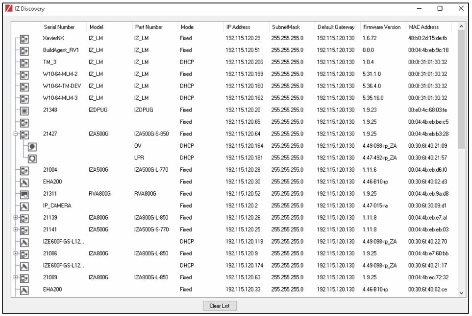
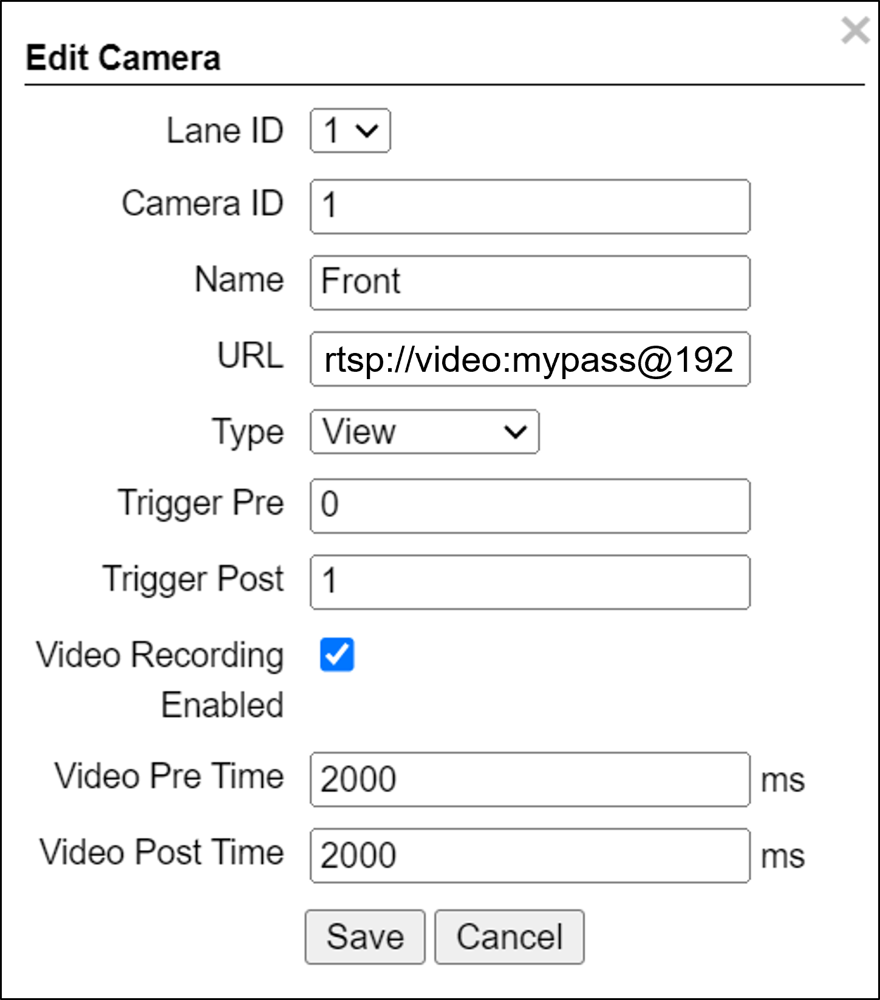

INEX Solution for the Motorola PTL System
Configuration Guide
Click to show the Table of Contents
- 1. Background
- 2. Computer and Software Requirements
- 3. Use IZ Discovery
- 4. Prepare to Aim and Calibrate
- 5. Log In to RoadView
- 6. Configure RoadView - Settings Tab
- 7. RoadView - System Info Tab
- 8. Calibrating a Camera Using RoadView
- 9. Verify System Operation
- 10. RoadView Troubleshooting
- 11. Legal Notices
2. Computer and Software Requirements
-
Computer running with Windows 10 or later
-
Chrome or Microsoft Edge browser
3. Use IZ Discovery
The factory default IP address of the IZIDPUGOX Data Processing Unit (DPU) is on the sticker on the device; typically 192.168.5.110. If needed, use IZ Discovery to change its IP address to one you have allocated in your network.
3.1. Installing and Using IZ Discovery
The IZ Discovery utility discovers all active devices connected to the network, and displays a list of their network parameters. These devices can include cameras and computers.
|
If any device on your network is connected via wireless, IZ Discovery will not recognize the device. In addition, if the computer running IZ Discovery is connected via wireless, you will not see any devices displayed. |
-
Download the IZ Discovery software (link)
-
Run IZ Discovery
-
When IZ Discovery first runs, you may see a Windows security warning. If so, click Run.
-
If you see a message related to the Windows firewall, click Allow.
-
IZ Discovery will start and display a list of devices on the network, according to their serial numbers (see Figure 1).
-
Scroll down to find the device you are interested in. You can double-click to view/edit a specific device’s IP address parameters (see Section 3.2).
-
Click Clear List to refresh the discovery process.
Figure 1. IZ Discovery Utility
-
-
If IZ Discovery does not recognize a device:
-
Press the device’s reset button (if available)
-
Reset the device by shutting off power/removing the LAN cable, waiting 5 seconds, and reapplying power
-
Check the LAN cable between your laptop and the network, and the LAN cable between the device and the LAN switch. Replace the cable(s) and run IZ Discovery again.
-
3.2. Changing a Device’s IP Address and Network Settings

|
It is highly recommended to use a fixed IP address (not DHCP). A fixed IP address enables you to access the computer using the same URL every time, even after unexpected power outages. A dynamic IP address may change upon device reboot. Before opening the web interface, you will have to find the current IP address of the device using IZ Discovery. If you want to copy the IP address (for login to the device) you will need to uncheck the DHCP checkbox momentarily to make the address field accessible. For devices using RoadView software, you can change the IP address using the RoadView Settings tab. |
To change the device’s mode (fixed or dynamic [DHCP]), or IP address:
-
Select the relevant line in the list of devices and double-click on it.
-
The Network Settings window appears
-
To change the mode:
-
Check or uncheck the DHCP box
-
Click Save
-
-
To change the IP address:
-
Verify that the address is not used by any other device on the network
-
Be sure to uncheck the DHCP box
-
Enter the network address parameters
-
Write down the new IP Address and click Save
-
-
The change should be reflected in the main dialog. This can take about a minute until the IP is obtained. If you do not see the change after this time, close IZ Discovery, and then reopen it.
-
Verify that the IP address parameters have been changed to the ones you wanted. If not, you will have to log into the device (or RoadView) and change the IP address.
4. Prepare to Aim and Calibrate
Move a vehicle next to, and at the middle of the capture line. (This is the position at which the vehicle detector signals that the vehicle is present.) Ensure that the camera is aimed at the middle of the lane, and is at the required capture distance.
Alternatively, in a lab, position a license plate at the expected distance and height.
5. Log In to RoadView
5.1. Logging In
-
Open a browser.
-
Type in the IP address of the RoadView computer - the IZIDPUGOX. For example:
192.168.5.110 -
You will see the login screen. Enter the default username and password (root, root):
 Figure 3. Logging In to RoadView
Figure 3. Logging In to RoadView -
You should see the RoadView Live (Journal) tab (see Section 9).

6. Configure RoadView - Settings Tab
Use the Settings tab after the first installation or re-installation of the PTL system, or when some fundamental parameters need updating. For example, if the IZIDPUGOX was moved to a different location (time zone).
|
Configure the parameters in the order in this section of the document. After clicking the Save button at the end of the Detector Configuration section, it will take several seconds before the Live tab can start displaying Events. Also, some defaults and/or available parameters may change, depending on the Detector Configuration "Mode" selected. |
6.1. Software Version and DPU Information
The box at the upper right of the Settings screen shows:
-
The RoadView software version (verify that the version is correct)
-
The model, part number and serial number of the DPU that RoadView is communicating with:
6.2. Network Settings
-
If needed, set the IZIDPUGOX IP address parameters.
-
Remember to click the Save button in this section; the change will be applied immediately.
|
The Network Settings refer to the IZIDPUGOX computer - NOT the computer on which the browser displaying the GUI is running. It is highly recommended to use a fixed IP address (not DHCP). A fixed IP address enables you to access the DPU using the same URL every time, even after unexpected power outages. |
6.3. Date and Time Settings
|
The Date and Time Settings refer to the location of the IZIDPUGOX computer - NOT the computer on which the browser displaying the GUI is running. The Time Zone selections are organized by continent. For example, the "America/" prefix covers various cities and countries in North America (U.S. and Canada) and South America. |
Set Time (Automatically/Manually) - The preferred setting is "Set Time Automatically".
-
If Automatic, the date and time will be updated from a central NTP (Network Time) server; the server can be in the cloud or on a local NTP server. (The default is ntp.ubuntu.com.)
-
Enter the NTP server URL
-
Select the interval at which you want RoadView to poll for the date and time (selected from the Polling Interval dropdown).
-
Click the "Update Now" button to update the date and time immediately.
-
The icon (green check mark or red "x") indicates if the URL of the NTP server is correct, and if the connection to it was successful.
-
-
If an NTP server is not available, select Manual. Click in the Date and Time box to display a calendar/time popup.
-
Select a Time Zone; set it to the local time at the location in which the DPU is installed (not the UTC default).
-
Remember to click the Save button at the end of this section after making changes.
6.4. Lanes
Use this section to add and configure Lanes.
-
Edit - edit the Lane’s parameters
-
Delete - delete the Lane (a warning will be displayed)
-
Trigger - send a software trigger immediately to RoadView
Each Lane number must be unique in the overall ALPR system.
The images from all cameras capturing the same physical lane will be combined into a single Event.
Each "Lane" is actually a virtual Lane. For example, if you have two cameras capturing the same physical lane, you will need to create two different "Lanes", and associate each camera with a different "Lane".
Figure 9. Add/Edit Lane Dialog -
ID (required) - The identification number of the lane to be captured by the cameras. This number will appear associated with Events in the Live tab.
-
Name (required) - The name of the Lane as it will appear throughout the user interface (GUI).
-
Location - Select one of the following options:
-
Unknown - the camera’s position relative to vehicles is unknown.
-
Front - the camera in this Lane is capturing images from the front of vehicles
-
Rear - the camera in this Lane is capturing images from the rear of vehicles
-
-
Passageway - Unused
-
Ignore Opposite Direction - Unused
6.5. Cameras
-
Edit - edit the camera’s parameters (see Figure 11)
-
Delete - delete the camera (a warning will be displayed)
-
Camera table headers: Camera ID, Lane ID, Name, URL, Type (as configured when the camera was added)
-
Image - Thumbnail image from a recent camera image
If you add a camera, or edit a camera’s parameters and click the Save button in this dialog (even if you did not change the URL), you may see a warning icon in the Image column. The reappearance of the image indicates that the core software has restarted, and Events will resume being captured and displayed in the Live tab, with the following changes:
- The Event ID will continue to increase from the last Event ID.
- The history of previous Events for that camera will be cleared -
Add Camera (button at end of Cameras section):
Figure 11. Add/Edit Camera Dialog
-
Lane ID - The identification number of the lane being captured by the camera(s). Select a Lane number you defined (see Section 6.4). This number will appear associated with Events in the Live tab.
The images from all cameras capturing the same physical lane will be combined into a single Event.
Using the same Lane ID for different cameras will combine the reads into one Event (see Section 6.4).
You can position multiple cameras to be in different positions for the same lane (front/rear).
-
Camera ID - For internal use; should be unique in the overall ALPR system
-
Name - Camera name for internal use; should be unique in the overall ALPR system
-
URL - RTSP URL
-
Type - Type of camera (View)
-
Video Recording Enabled - Check the box to enable video recording
-
Video Pre Time - How much time before the Event to record video; set as shown
-
Video Post Time - How much time after the Event to record video; set as shown
6.6. Motorola Integration
Enable Motorola Integration and set the parameters as follows. Remember to click the Save button at the end of the Detector Configuration section after making changes.
-
Motorola URL - URL of the Motorola server
-
Motorola User Name - username to access the Motorola server
-
Motorola Password - password to access the Motorola server
-
Camera Port - the HTTPS port on which RoadView listens for commands from the Motorola server
-
Log Store Days - how long Motorola logs are stored in the RoadView database; also defines how long Events are stored in the offline queue
-
Keep Alive Interval - how often RoadView sends a Keep Alive message to the Motorola server
-
Offline Enabled - enables the Offline Queue for Events sent to the Motorola server; should always be enabled
6.7. Journal
-
Check the Enabled checkbox
-
Remember to click the Save button at the end of the Detector Configuration section after making changes.
6.8. Detector Configuration
-
Set the parameters as shown here
-
Remember to click the Save button at the end of this section after changing these parameters.
Explanations of frequently used parameters:
-
Mode - Note that parameters may appear or be hidden, depending on the chosen Mode.
-
NonTriggered - Events are created and reported by LPR video analytics
-
-
Region - Region for which characters on the plate will be recognized. Select from the following options:
-
Israel
-
8. Calibrating a Camera Using RoadView
-
When you see a vehicle at a typical capture position on the video, click on the video to pause it.
-
It is recommended to use the view called "Draw image by maintaining aspect ratio (two-headed arrow)". You select this view by clicking on the right-most button at the upper left of the screen:
-
Select a camera from the dropdown list
-
The Frame Width (horizontal) and Frame Height (vertical) are displayed at the lower left, and are set automatically.
-
The Frame Timestamp at the lower left displays the date and time that the image is being taken/was taken by the camera.
-
Aim the camera using the mounting bracket’s adjustment hardware (see Figure 16).
-
Pan: Adjust the Pan so that the image of the license plate is in the horizontal middle of the Field of View.
-
Tilt: Adjust the Tilt so that the image of every expected plate position (depending on the vehicle type, such as passenger cars, jeeps, trucks, etc.) will be in the middle of the screen (from top to bottom).
-
Roll: Adjust the Roll so the license plate’s image is horizontally straight, parallel to the ground (not tilted to one side).
Figure 16. Pan/Tilt/Roll (Angle) Adjustments
-
-
When the correct position is achieved, make a preliminary tightening of the mounting screws.
-
Define the Region of Interest (ROI) by dragging on the corners (vertices) of the trapezoidal region. For optimum recognition accuracy, the ROI should be large enough to capture the region where plates could be found in images.
The following settings for the cameras are saved separately. For example, you may want a Region of Interest that is different for each camera.
-
Define the Plate Width Min: Events will only be created for plate reads whose width is greater than or equal to this parameter. Enter the desired value in the Plate Width Min text box.
This parameter can also be configured by dragging the small circle on the horizontal line on the Calibration tab (expressed in pixels).
This parameter can be used to ignore small plate reads. For example, if the image was taken when a vehicle is too far away, the characters are too small to be read - even by a human. -
Define the Plate Width Max: Events will only be created for plate reads whose width is less than or equal to this parameter. Enter the desired value in the Plate Width Max text box.
This parameter can also be configured by dragging the large circle on the horizontal line on the Calibration tab (expressed in pixels).
This parameter can be used to prevent false reads, such as large numbers on trucks. -
Direction (red arrow on video): Not used
-
When you have finished, click the Save button. Wait several seconds for the display to refresh automatically, which indicates that the RoadView recognition software is running again with the updated parameters.
-
When the correct position is achieved, make a final tightening of the mounting hardware.
-
Repeat these steps for other cameras.
9. Verify System Operation
-
Using a license plate mounted in a lab, or by driving a vehicle through the lane, verify that an Event is generated with the correct plate read, as recorded in the RoadView Live (Journal) tab.
-
Once the lane is active, verify that Events are being generated for each vehicle passing each camera, and that the recognition has sufficient accuracy and confidence.
-
You can use the Search tab to find Event records stored in the RoadView database.
-
Click on each thumbnail under the large Event image pane to see overview and plate images
-
To see the video clip used to create the Event, click on the Video link under the thumbnails
-
You can use the System Status tab to check the statuses of different system components
10. RoadView Troubleshooting
| Symptom | Possible Solution |
|---|---|
Thumbnails in Settings tab, in the Camera section at bottom have been replaced by red exclamation points and/or |
|
Recognition rates are low |
Examine the video from the Camera on the Calibration tab:
|
11. Legal Notices
11.1. Notice
INEX Technologies reserves the right to improve and enhance its product offerings. Thus, the illustrations and descriptions presented in this manual may differ in some respect from the products you receive.
Technical specifications are subject to change without notice.
In addition, please note that some figures are not drawn to scale, in order to illustrate the addressed issue more effectively.
All third-party trademarks are the property of their respective owners.
INEX Technologies cannot be held liable for technical and editorial omissions or errors made in this document; nor for incidental or consequential damages resulting from the furnishing, performance or use of this document.
Actions or circumstances that void the warranty are improper usage, improper handling without adequate electrostatic discharge (ESD) protection, defects resulting from natural disaster (fire, flood etc.) and unauthorized modifications or repair.
Power undervoltage, overvoltage and/or incorrect polarity will damage the unit and will void the warranty.
It is your responsibility to ensure that all wires connected to INEX Technologies' products have appropriate surge protection. Any damage due to electrical spikes (for example, lightning) is not covered by the warranty.
No part of this document may be reproduced in any form without permission from INEX Technologies.
11.2. Software Precautions
-
The use of any INEX Technologies' software products or any other software product referred to in this document with internet access shall be used wholly at your own risk. INEX Technologies does not take any responsibility for abnormal operation, privacy leakage or any other damages resulting from cyber attack, hacker attack, virus infection or any other internet security risks.
-
Proper configuration of all passwords and other security settings is the responsibility of the installer and/or end-user.
11.3. Legal Disclaimer
TO THE MAXIMUM EXTENT PERMITTED BY APPLICABLE LAW, THE PRODUCT DESCRIBED, WITH ITS HARDWARE, SOFTWARE AND FIRMWARE, IS PROVIDED "AS IS", WITH ALL FAULTS AND ERRORS, AND OUR COMPANY MAKES NO WARRANTIES, EXPRESS OR IMPLIED, INCLUDING WITHOUT LIMITATION, MERCHANTABILITY, SATISFACTORY QUALITY, FITNESS FOR A PARTICULAR PURPOSE, AND NON-INFRINGEMENT OF THIRD PARTY. IN NO EVENT WILL OUR COMPANY, ITS DIRECTORS, OFFICERS, EMPLOYEES, OR AGENTS BE LIABLE TO YOU FOR ANY SPECIAL, CONSEQUENTIAL, INCIDENTAL, OR INDIRECT DAMAGES, INCLUDING, AMONG OTHERS, DAMAGES FOR LOSS OF BUSINESS PROFITS, BUSINESS INTERRUPTION, OR LOSS OF DATA OR DOCUMENTATION, IN CONNECTION WITH THE USE OF THIS PRODUCT, EVEN IF OUR COMPANY HAS BEEN ADVISED OF THE POSSIBILITY OF SUCH DAMAGES.
THE USE OF ANY INEX Technologies' SOFTWARE PRODUCTS OR ANY OTHER SOFTWARE PRODUCTS REFERRED TO IN THIS DOCUMENT WITH INTERNET ACCESS SHALL BE USED WHOLLY AT YOUR OWN RISK. INEX Technologies DOES NOT TAKE ANY RESPONSIBILITY FOR ABNORMAL OPERATION, PRIVACY LEAKAGE OR ANY OTHER DAMAGES RESULTING FROM CYBER ATTACK, HACKER ATTACK, VIRUS INFECTION OR ANY OTHER INTERNET SECURITY RISKS.
For details, see the INEX Software End User License Agreement.
© INEX Technologies - All rights reserved.
Doc. No. PTL-MAN-002b Ver. 2024-03-21